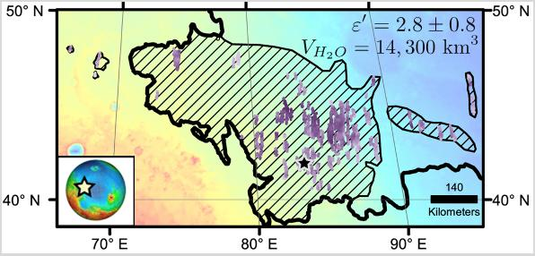

The big picture.
Not every rock.
MOLA topography is gridded at 128 pixels per degree: about 463 m north–south. Unsampled bins may be interpolated. Grid-derived slope is regional context, not local walking slope.
NASA MGS / MOLAPick your stops.
Set your limits.
Find your way home.
Historical orbital data. Zooming adds no source detail.
| Stop / proposed collection | Requested | Fits capacity |
|---|
If the requested collection exceeds spare capacity, the displayed allocation scales every request proportionally. It does not prioritize science. Starting supplies remain in the load calculation throughout; no mass is removed for consumption.
| Leg | Samples aboard | Total cargo |
|---|
Planning assumptions, not vehicle or physiological specifications. Cargo excludes crew bodies and worn suits. Mass is in kg, with no Mars-gravity multiplier. Food, water and rover energy remain unvalidated allowances. Model & limitations ↗
Conceptual route. A time-budget check does not establish terrain or life-support safety.
Calculate a mission to see its full outbound and return terrain profile.
Elevation is in metres relative to the source Mars areoid. Slope is derived from the coarse MOLA grid, not measured local walking slope. The return retraces the same terrain. Profile interpolation adds no observations.
Regional context only. MOLA samples are about 463 m north–south and 327 m east–west here, and some source bins are interpolated. Small rocks, pits and steep local slopes can be missed. This profile cannot certify a safe path.
Could field observations help assess a potential ice-related research site? Our proposed science stops turn regional evidence into questions to investigate.
MOLA topography is gridded at 128 pixels per degree: about 463 m north–south. Unsampled bins may be interpolated. Grid-derived slope is regional context, not local walking slope.
NASA MGS / MOLAThe local area is mapped as eAb, Early Amazonian basin unit, by USGS Tanaka et al. (2014). At 1:20 million scale, it cannot identify material or confirm an outcrop at a stop.
USGS / SIM 3292Published SHARAD research reports buried ice in part of Utopia Planitia between 39° and 49°N. Latitude alone does not put our hypothetical stops inside that deposit.
Read the NASA/JPL research ↗
Mars has a thin, CO₂-dominated atmosphere. Local temperature, dust, radiation, communications, obstacle data and suit-consumable measurements are unavailable. Crew, ration, water, cargo and rover-energy coefficients are editable scenario assumptions, not measurements or certified requirements. No values are invented for these conditions.
Routes use planetocentric coordinates, east-positive longitudes and Mars's mean radius of 3,389.5 km. Grid elevations are not integrated into 3D walking distance. All habitat and waypoint locations are hypothetical.
Earlier Mars Project research is credited to Team Tokamak Bruno. This Kazakh Space Nomads prototype includes disclosed AI assistance for code, source inspection, tests and documentation. NASA/USGS attribution does not imply endorsement.
The original Python/Streamlit project and its 89 executed tests are available as a separate download. This hosted interface runs in the browser. The supplied 2026 challenge page returned HTTP 503 during verification.
Download original Python project ↓